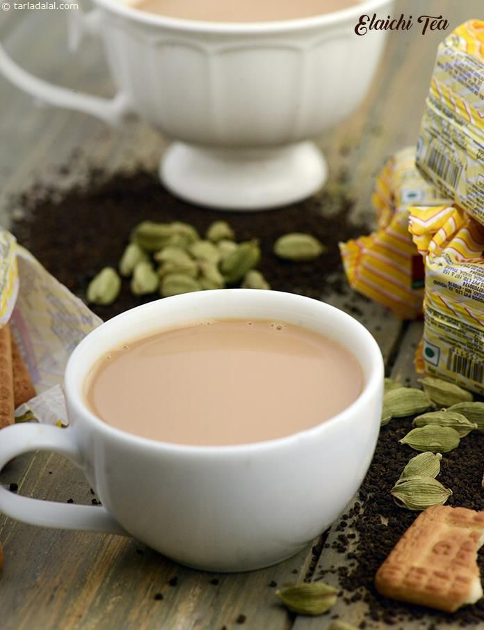

Chai

The day you learned to make cardamom-flavored chai.
It all starts with the quality of milk and cardamom.
The secret is to crush the cardomom seeds into a fine powder. This will guarantee a fresh and aromatic chai every single time.
Ingredients
- Milk
- A few fresh cardamom pods
- Indian tea leaves/ powder
- Sugar (optional)
Steps
- In a sauce pan add about 200ml of milk per person
- Place the pan on med-high heat. Add Indian tea leaves/ powder to the milk
- Let it come to boil. Caution! The milk will spill if left unattended
- Lower the flame
- Add freshly powdered cardamom to the hot milk
- Add a tea-spoon of sugar (optional)
- Bring the milk to another boil. Caution!
- Now the tea is ready! Pour it in a cup using a sieve
- Serve and savour the absolute deliciousness!